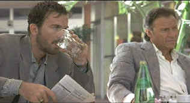

| City of
Industry/B+,B+ |
| MGM/1997/97/ANA
1.85 |
City of Industry
is a ferociously effective little neo noir starring Harvey Keitel and directed by John Irvin. It's
one of those films that slip through the cracks, getting the short shrift from the releasing studio
for one reason or another, pulled from theaters before any word of mouth generates, and makes a
home video debut with little or no fanfare. Catch the fiery tale of this comet paced flick on DVD
now that you have the chance.
 |
| The brothers Egan. ©MGM |
Small time crook Lee Egan gets his hands on some valuable information
about a big delivery of diamonds. Lee puts together a team to take down the jewelry store. Jorge
Montana, awaiting sentencing on a weapons charge, is the computer guy and one of the gun hands. Lee
picks up Jorge at his home where he leaves his pretty wife and kids to rendezvous for the job In
Palm Springs, older brother experienced tough Roy Egan steps off the bus and joins them. As they
survey the job they await the arrival of the fourth spoke, wheel man Skip Kovich.
The heist itself is a thing of simple and sudden fury. Very impressive
scripting and directing, but City of Industry really revs to a furious pitch in the
aftermath of the robbery. When things don't go exactly as planned, a Chinese gang gets involved,
Skip's black contacts back him up, Rachel Montana gets involved and Roy Egan becomes a violent
force of nature. There's one especially choice moment when you watch Skip, the wildest of the
heisters, contemplate his share of the cut and follow his thought process to a tee. It's a neat bit
of acting and directing.
Keitel plays Roy Egan with straight ahead sense of purpose thoroughly
apparent both inside and out. Egan is pure unmitigated bottled rage. The actor twists his face in a
snarl. When he asks for information, he gets it. No long interrogations from Keitel; people sense
quickly that he means business. Famke Janssen as looks great, but it would have been nice if she
had a more active role. A little bit of Timothy Hutton goes a long way in City of Industry:
he's effective as Lee and the smarmy feeling of the actor often conveys is cut short by a quick
exit. Stephen Dorff is terrific as Skip. Dorff is a joker in a pack of playing cards. He's
explosive and unpredictable.
Director John Irvin does an outstanding job in capturing the surroundings.
The landscape is often elegant as the film unfolds with jungle violence. I recommend you catch this
one. It’s not a perfect film, but it is an order of magnitude better than most formula films
churned out by the movie machine.
Much like the firepower of the straight ahead no-nonsense Harvey Keitel
character, City of Industry delivers virtually everything expected of it on DVD. The sharp
anamorphic images are a dram short of perfection. Color is excellent. Reds are rich. Blood oozes
with swift authority. The night poolside sequence simply sings visually with reflections of
blue neon on on the water with a deep black background. The DVD delivers lots of light output and
an excellent contrast range. The Dolby Digital 2 channel surround soundtrack rips and snorts, timed
to the characters with uncanny precision.
|
|
|
|

The
Movie Poster Archive include extensive poster images from the films of stars like Susan Hayward,
Kirk Douglas, Katharine Hepburn and many more. Our featured star is Robert Mitchum

Selections from the Feature Archive
include articles on Akira Kurosawa, Frank
Darabont, Blonde Bimbos, Hollywood Street Gangs, or Vietnam: The
Hollywood Pariah, and many more....

Click on the image of The Heistmasters for an interesting feature on the tough guys that
pull off the big jobs.

 Have you visited Home Theater
Talk lately? One of the friendliest places on the Net for Home Theater and DVD discussion, you
can get help for installation problems or simply share your opinions with other Vidiots. Have you visited Home Theater
Talk lately? One of the friendliest places on the Net for Home Theater and DVD discussion, you
can get help for installation problems or simply share your opinions with other Vidiots.

The American Widescreen Museum, is the ultimate resource for widescreen movie information, Martin
Hart's reliable site is a great tool for movie buffs.
 Images is a
non-commercial Web site created for everyone who enjoys movies and popular culture. Images is
published quarterly; however, new reviews will appear each week, so check back often. Images is a
non-commercial Web site created for everyone who enjoys movies and popular culture. Images is
published quarterly; however, new reviews will appear each week, so check back often.
Imaging Science Foundation
The Imaging Science Foundation promotes proper standards in home theater viewing. ISF trained
technicians offer monitor calibration services to consumers. The difference in a properly
calibrated monitor can be astounding. Click on the image to find an ISF member near you.
|